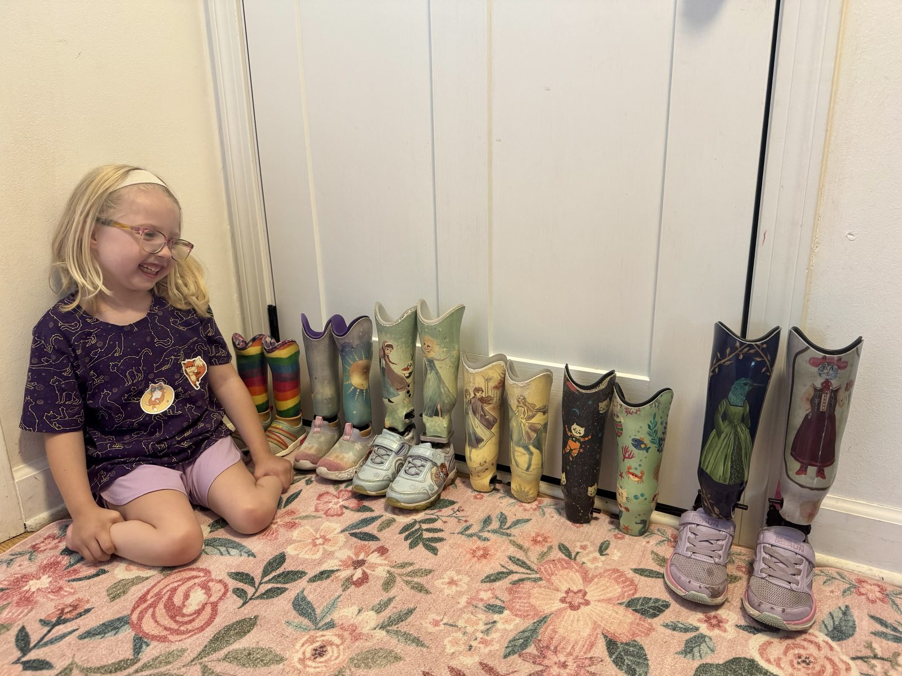
Gwen with all her prosthetics.
Skin Care & Prosthetic Cleaning
To keep Gwen’s skin healthy, we use Aquaphor daily. For cleaning her liners and sockets, we use Aquaphor Baby Unscented Soap, which helped resolve previous skin irritation caused by scented soaps. Additionally, we wipe down her liners with alcohol wipes every few days to keep everything fresh and clean.
Slippers
We call them Gwen’s “slippers,” though there isn’t really a universal name for them. These are soft, foam-based covers for the end of her legs that let her move around comfortably without putting on her full prosthetics. They’re especially useful at home, similar to how anyone might wear slippers around the house, so Gwen doesn’t have to put on her legs every time she wants to get up and move.
The slippers are made from two types of foam. The outside is a more rigid PE Lite foam that gives structure and shape, while the inside is lined with a softer white foam for comfort. On the bottom of each slipper is a rubber sole that provides grip and traction, making it safe for walking on smooth surfaces.
Gwen typically wears her slippers with regular socks. They stay on well without any kind of suspension system, making them easy for her to use independently.
We also use these at the pool or beach, where prosthetics aren’t practical. They’re lightweight and easy to slip on and off, which makes them incredibly convenient. Gwen usually gets a new pair each year when her prosthetics are remade. Every time we attend a camp or limb difference gathering, other parents tend to ask about them, as many haven’t seen this type of solution before. We would highly recommend them to anyone with young kids who use prosthetics. They’ve made a big difference in Gwen’s daily life.
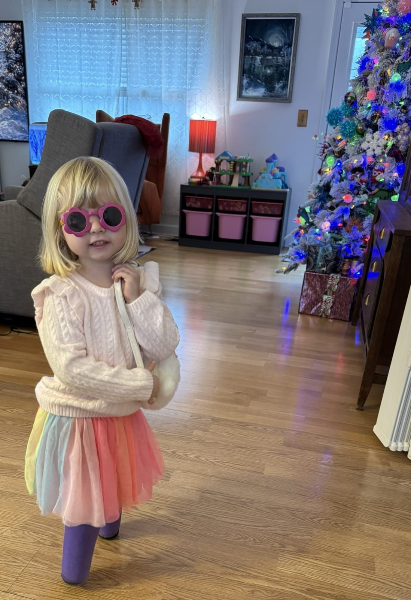
Gwen's Slippers
Set 1: First Prosthetics
Gwen received her first set of prosthetics around her first birthday. The setup included a basic pediatric SACH foot attached directly to the socket, keeping her low to the ground for better balance. The socket used a PE-Lite liner and a suspension sleeve that rolled up over her thigh.
When we got our first set of prosthetics, it's not like we put them on her and she just started walking. She did not want to wear them at all at first. We would encourage her to wear them by distracting her with toys. We would encourage her to stand by putting something she really wanted on a chair or surface she wanted to play with. We would even let her watch TV as long as she was standing in her legs. With persistence, we were able to get her to tolerate wearing the legs longer and longer.
We bought some Nugget play couches which we used to make foam tables and put toys on them. We would start placing toys on the Nuggets and encouraged her to start taking steps while holding onto them. When she got better at that, we would space the Nuggets apart so that she would transfer and walk from one to the other to get to different toys, until eventually she was able to stand without holding onto anything.
We also signed her up for gymnastics and a music class. Being around other kids and seeing them walk also motivated her. During this time, we were also doing physical therapy at Children's Hospital where she learned strategies like standing up on an open floor without anything to grab onto.
This part is hard and takes a lot of effort, but with patience and creative motivation, Gwen eventually learned to walk confidently in her first prosthetics.
Set 2: Scout Foot Upgrade
This set kept the same socket and suspension sleeve but upgraded to the Scout foot. Gwen did very well in this setup and gained a lot of speed and confidence. However, once potty training started, the high suspension sleeve became a hassle. Otherwise, these legs worked great for her.
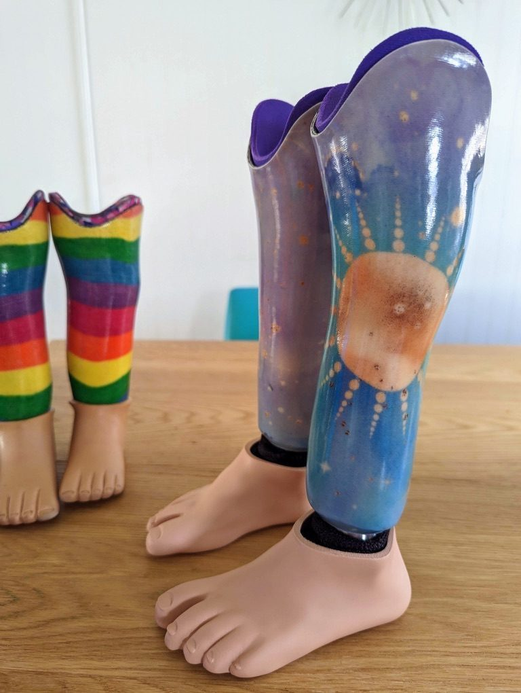
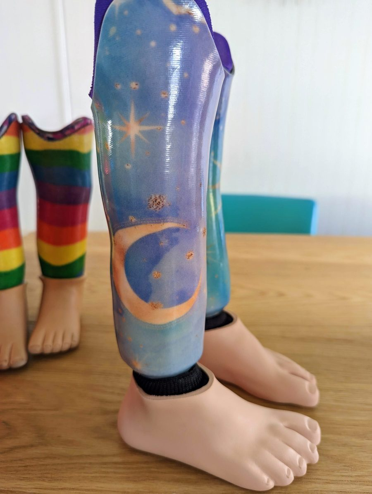
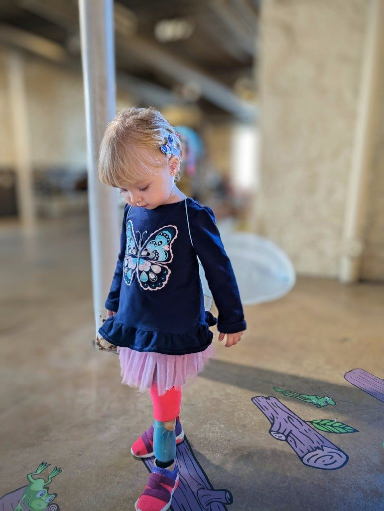
Gwen’s second set with the Scout foot.
Set 3: Gel Liners & Pin Locks
For the third set, we moved to a gel liner and pin lock system, which stops just above the knee, this made potty training much easier. Finding liners that fit Gwen properly was challenging since most manufacturers don’t make custom gel liners for small kids. On one leg, we used a distal cup to help with fit. On the other leg, we used gel spots to get everything aligned correctly.
This set also included the Truper foot. It offered more flexibility for uneven surfaces, but Gwen's gait didn’t feel as smooth as it was with the Scout foot from Set 2. If we were doing it again, we’d likely stick with the Scout foot instead.
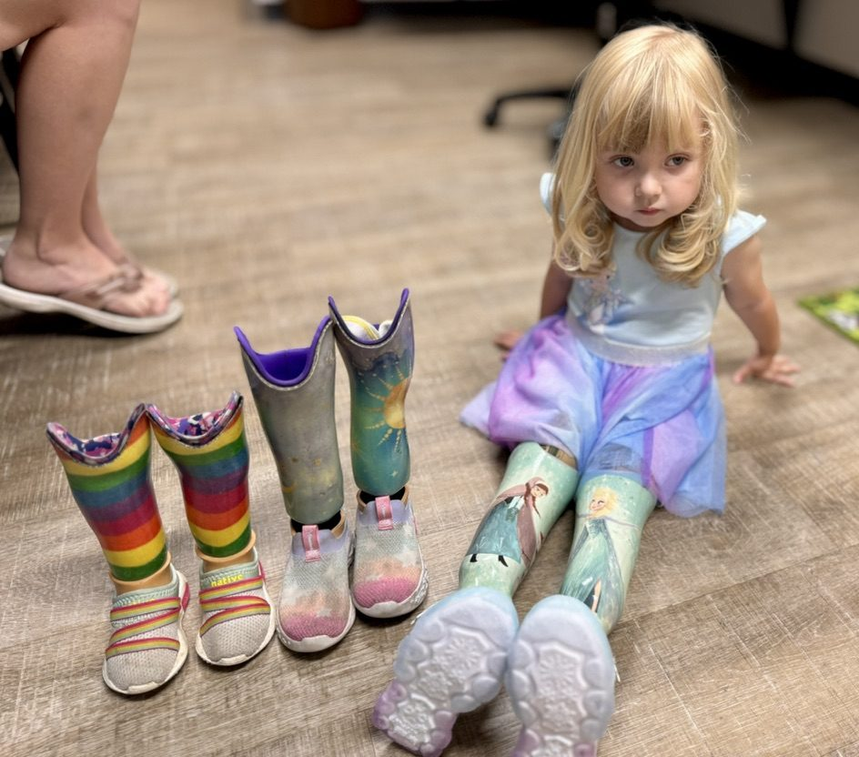
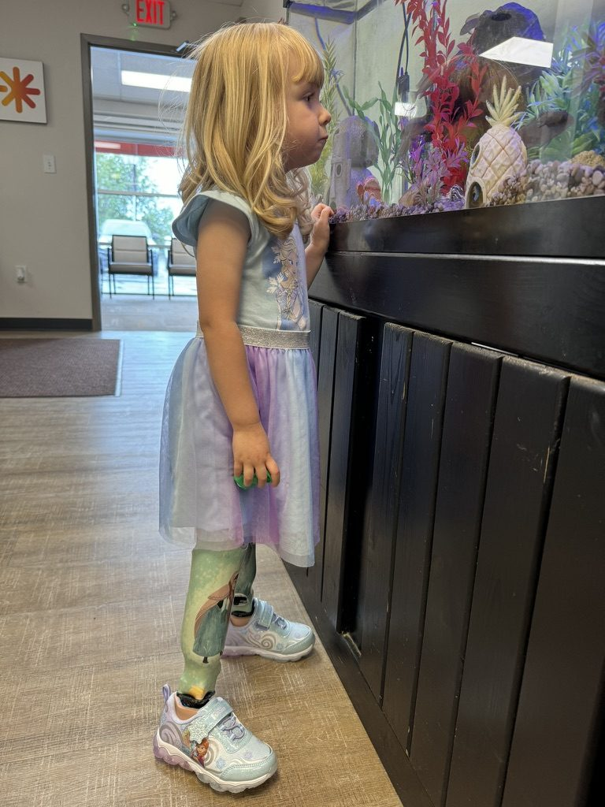
Gwen’s third set with gel liners and pin locks, beside her earlier rainbow and Scout-foot sets.
Set 4: Formula Foot
This set kept the gel liner and pin system, but we upgraded to the Formula pediatric foot. This foot has been a massive improvement. Gwen now walks faster, and when holding her hand, we no longer feel the shock of each footfall like we did with previous feet. Her steps are softer, her balance improved immediately, and she began alternating feet on stairs without any prompting. The Formula foot has been a huge success, and we plan to continue using it going forward.
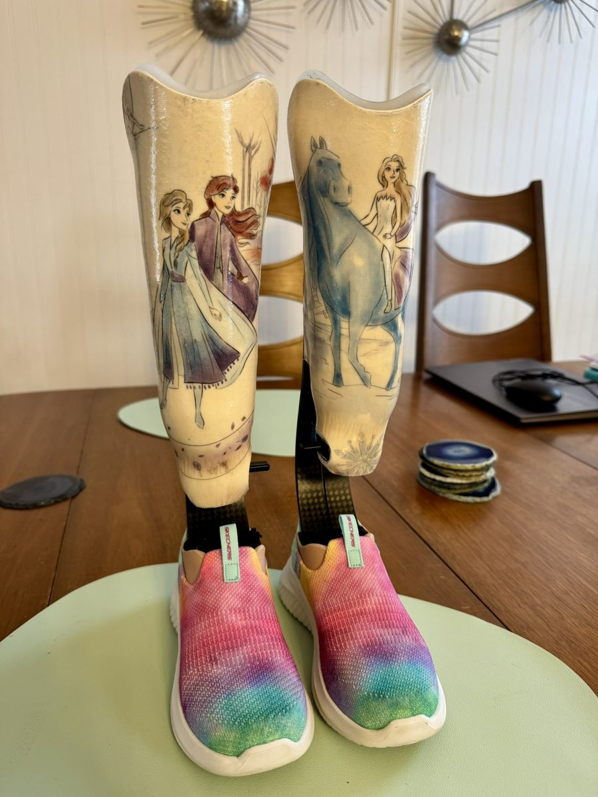
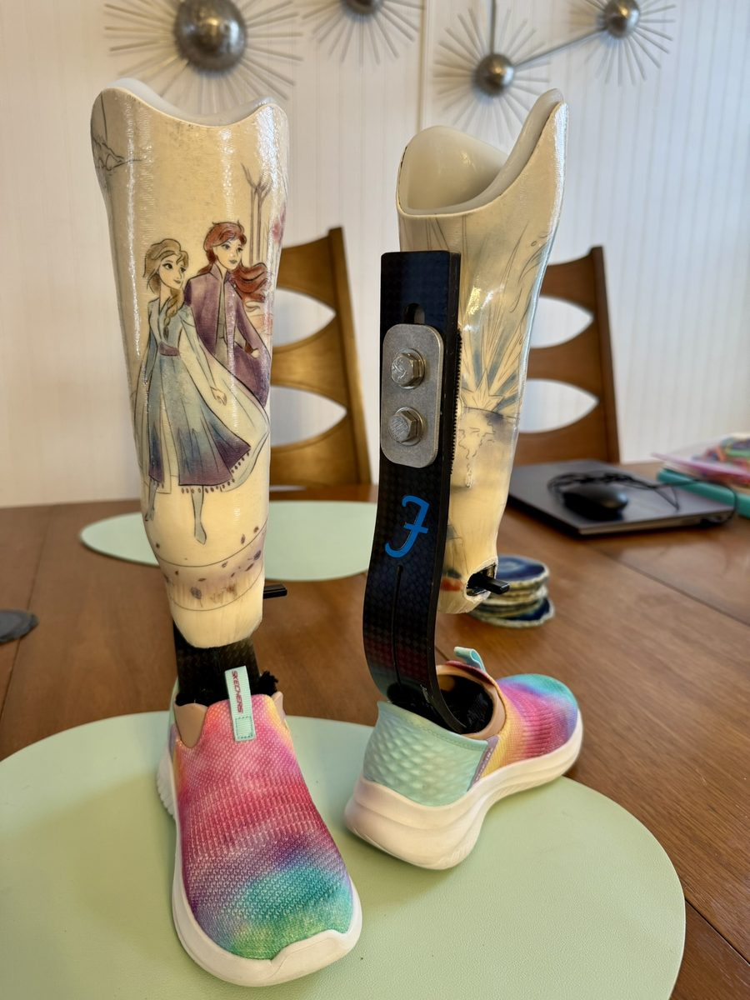
Gwen’s fourth set with the Formula foot, including baseball with the Miracle League.
Set 5: New Sockets and a Better Fit
For Gwen’s fifth set, we kept the Formula feet from Set 4 and moved them over to a new pair of sockets. Everything else about the setup stayed the same. She had simply grown and needed sockets with more room.
By the time she outgrew Set 4, both sockets were very tight. Her right leg was especially difficult to get on and off because of the shape of her nub. As she grew, the socket had been ground down to create more room. Eventually, the back became so thin that we could see light through it when we held it up.
For Set 5, our prosthetist built a channel inside the new socket on that side. The channel gives the shape of her nub a path to slide through as it moves down into the bottom of the socket. This worked very well and made the prosthetic much easier to put on and take off without needing to keep grinding away material as she grew.
Gwen chose the designs herself and wanted space cats on one leg and mermaid cats on the other. We were surprised that we could actually find both, and the finished sockets turned out exactly how she wanted them.
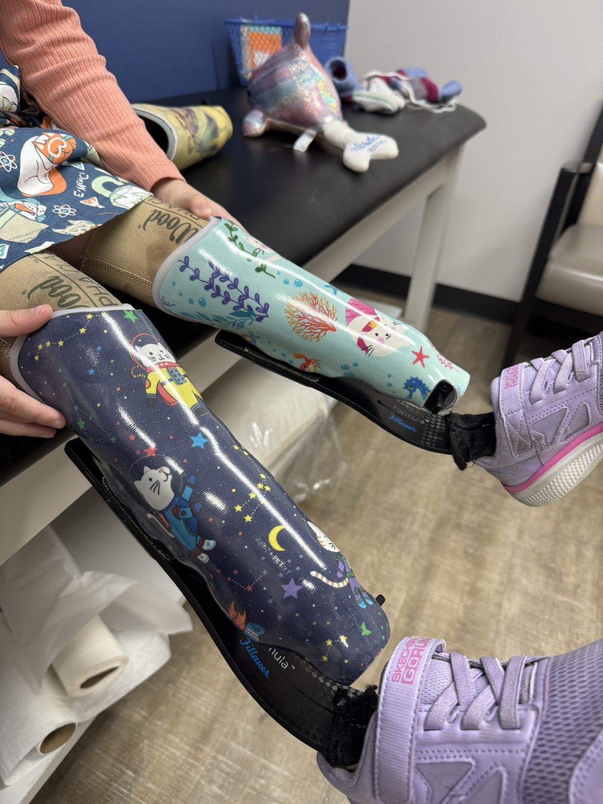
Gwen’s fifth set of prosthetics with space cats and mermaid cats.
Set 6: Hummingbirds, Cats, and Sparkly Feet
For Set 6, we once again moved the same Formula feet onto a new pair of sockets. These feet have now been used with three sets of sockets and continue to work extremely well for Gwen. The channel inside the previous socket also worked so well that her prosthetist used the same design again.
Set 5 lasted about eight months. During that time, Gwen grew an inch and the sockets became very tight again. This time, her left leg caused the most trouble. The bottom half of the socket was too tight while the top was too loose. We tried filling the space at the top with foam and half socks, but her gait still did not look right. As soon as she received the new sockets, her gait looked much better.
Gwen asked for a fancy hummingbird on one leg and a fancy cat on the other. My wife enjoys the challenge of finding designs for Gwen’s increasingly unique requests, and Gwen was very happy with how these turned out.
The morning before Gwen’s appointment, I removed the Formula feet from Set 5 and took them to Lizard Skinz, a vinyl wrapping company in the Grandview area. They wrapped the exposed carbon fiber in sparkly pink vinyl before the feet were installed on the new sockets. With kindergarten only two weeks away, we wanted Gwen to feel like her prosthetics looked as cool as possible. In her eyes, these definitely did.
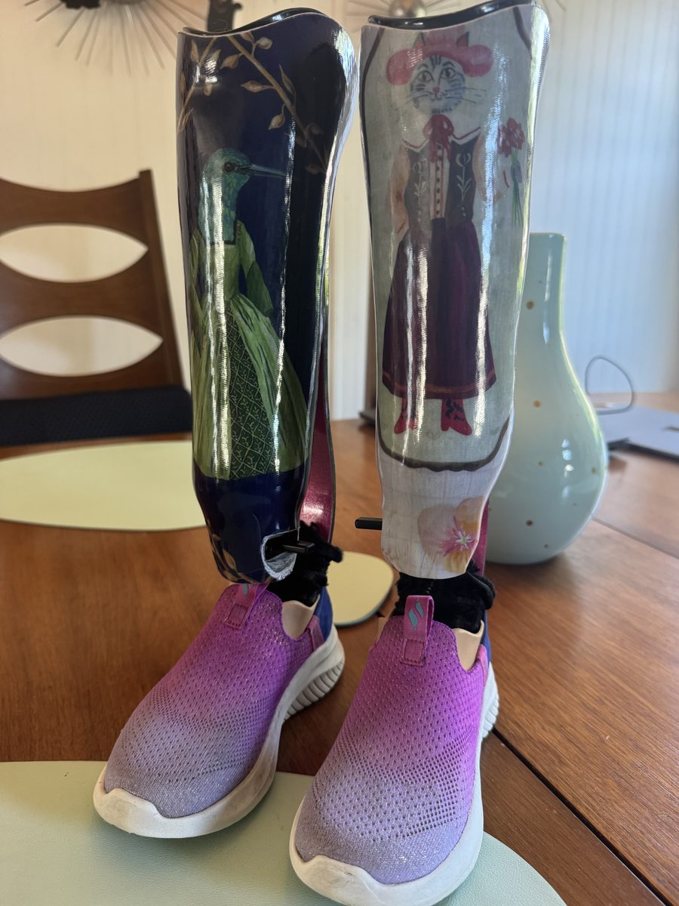
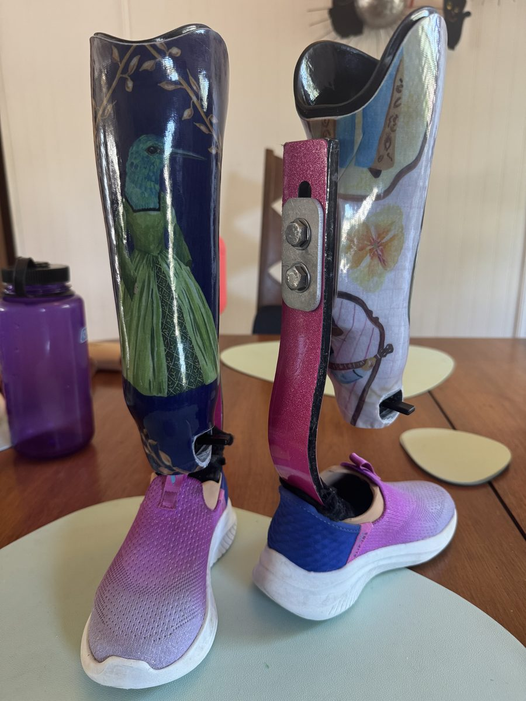
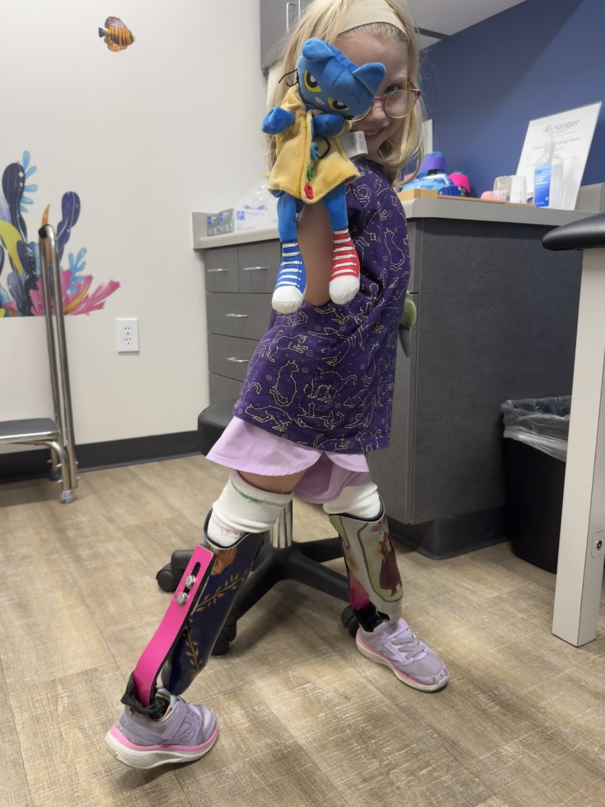
Running practice in her new prosthetics at physical therapy.